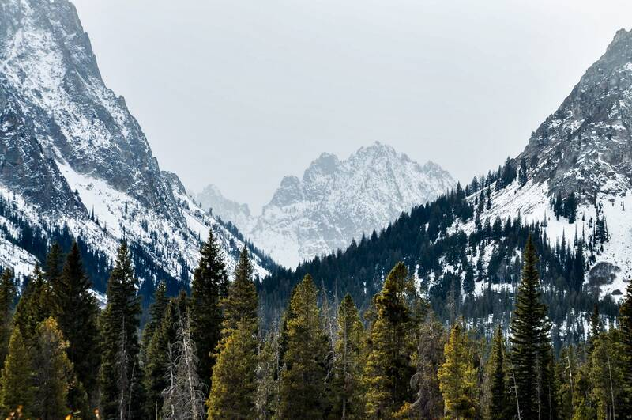
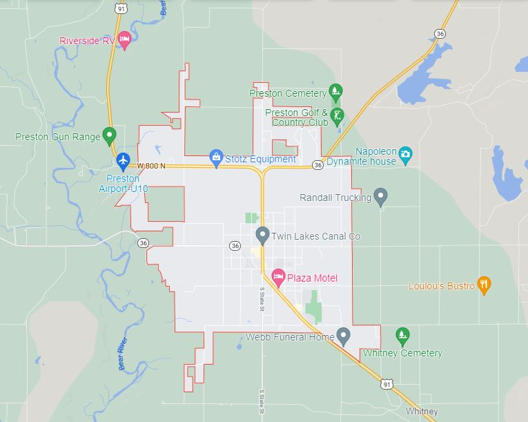

Preston Idaho

Weather Summary
Currently: Sunny
Temperature: 48 °F
Humidity:
Wind Speed: 5 mph
Wind Chill:

Preston Weather
Preston, Idaho is one of the best kept secrets of the West. Nestled on the Idaho side of beautiful Cache Valley and surrounded by towering mountains on each side, it is unbeatable for recreation opportunities, has that small town feeling, and is close to whatever you need. It is one of the safest places to live in the State of Idaho and in Cache Valley.
Contact Information
idaho-weather@gmail.com
878-414-1234


